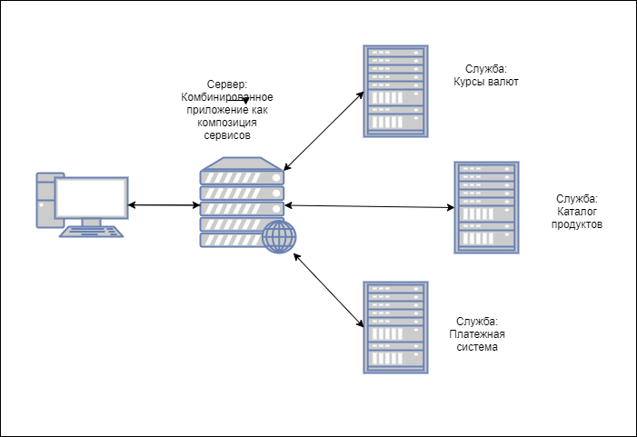

Достаточно часто можно встретить приложения в интерфейсе которых объединен различный и почти не связаный между собой функционал, но при этом приложение работает как едтиное целое. Например, сайт банка или маркетплейса на котором есть и каталоги продуктов, и интерактивные карты с адресами офисов, дашборды с курсами валют и трендами, интерфейсы платежных систем и так далее. Реализовать такое разнообразие функционала в едином приложении может быть непросто.
Для управления сложностью при реализации подобных приложений применяется подход декомпозиции на относительно автономные приложения или службы комбинация которых и составляет общее приложение. Такие службы могут развиваться независимо друг от друга.
Это обычный подход с модульной декомпозицией, но он получил развитие с появлением так называемых Web-сервисов, то есть, автономных программных компонентов которые используют для коммуникаций стандартный протокол, что позволяет эффективно использовать их как компоненты комплексного приложения. Именно появление стандарта SOAP обеспечило развитие таких приложений, позволив эффективно общаться компонентам написаным разными командами с использованием различных технологий и языков программирования.
Принципы получившие название Сервисно-Ориентированной Архитектуры (SOA) позволяют разработать программную систему, которая объединяет разрозненные источники данных и различные компоненты-сервисы, каждый из которых может развиваться в соответствии с новыми тербованиями, при этом сохраняя совместимость и не нарушая работу использующего его приложения. Такие сервисы могут рекомбинироваться для получения новых приложений для удовлетворения специфических потребностей пользователей.
Основа разработке любого веб-сервиса - с самого начала проектирования придерживаться строгого соблюдения принципов SOA. Шаблоны архитектуры SOA позволяют веб-сервисам становиться строительными блоками крупных гибких приложения.
SOA был первым стилем архитектурного проектирования, который помогал решить несколько ключевых проблем в современных программных системах, которые должны соответствовать постоянно меняющимся ожиданиям пользователей. Позже появилсь подходы развившие эту идею, например, микросервисная архитектура, но SOA до сих пор (202x годы) находит применение в реальных системах.
SOA, уступив место на рынке облачных приложений продолжает играть важную роль в корпоратиыных системах для управлении бизнес-процессами.
SOA - это архитектурный стиль, не привязанный к какой то технологии или языку программирования. Он определяет стандарты и способы проектирования и разработки сервиса. Под сервисом здесь понимается логическое представление набора бизнес операций (бизнес функцций) которые в результате своего выполнения генерируют определенный результат выполнения. Сервис самодостаточен и предоставляет средства для стандартной коммуникации с другими сервисами. Для своего клиента сервис выступает как "черный ящик" предоставляющий нужную функциональность.
Примеры бизнес функций которые может предоставлять сервис:
Коротко говоря, SOA - это набор сервисов, и эти сервисы взаимодействуют между собой, а каждый сервис - это набор из одной или болеее операций или функций, каждая из которых четко определена, автономна и не зависит от других контекстов и состояний сервиса
Любая функциональная система основанная на SOA обладает своими уникальными характеристиками. Но есть основные элементы, которые являются обязательными в любых проектах, основанных на SOA.
Гибкость
универсальность и возможность повторного использования это еще одна важная характеристика SOA, поэтому сервисы должны быть гибкими, с меньшим количеством ограничений чтобы обеспечивать возможность повторного использования без влияния на клиентов, которые уже пользуются функциями сервиса. В этих ситуациях, возможно развивать и оптимизировать сервис без влияния на существующих клиентов. Но гикость в SOA важнее оптимизации. Например, представим сервис который предоставляет данные о погоде по названию населенного пункта. У нескольких населенных пунктов может быть одинаковое название, поэтому сервис целесообразно разделить на функции одна из которых возвращала бы идентификаторы населенных пунктов по имени, вторая выдавала результат по конкретному населенному пункту по идентификатору, а основная фунуция могла бы их комбинировать, сначала получив список идентификаторов а потом ы цикле запросить информацию по каждому идентификатору. Это может быть затратнее по рескрсам но намного гибче.Несмотря на то, что не существует спецификаций или стандартов, которые бы полностью описывали принципы SOA, некоторые принципы могут рассматриваться как определяющие для SOA. Соблюдение этих принципов является базовым для обеспечения качества любого сервиса.
Стандартизация является фундаментальным принципом SOA. Сервисы экспонируют свои функции через контракт, заставляя разработчика SOA сосредоточиться на детализации сервиса, типах данных, назначении сервиса, версиях сервиса, конечных точках обслуживания которые должны соответствовать стандарту. Контракт сервиса обеспечивает четкое видение способа использования, безопасности, контроля версий, формата запросов и ответов. Стандартизация гарантирует, что контракты на обслуживание четко определены и позволяют многократно использовать службу различными клиентами.
Интероперабельность - еще один важный принцип SOA. Возможность обмена информацией между сервисами - свойство которое помогает приложениям осуществлять эффективную связь между распределенными сервисами на различных программных платформах. Совместимость применяется на различных уровнях, таких как операционный (бизнес-процесс), информационный и технический, которые определяют, как системы могут взаимодействовать друг с другом на каждом уровне.
Упрощение представления службы за счет сокрытия внутренних деталей (сложности) помогает лучше объяснить функции и функционирование сервисов, помогает клиенту сосредоточиться на основной бизнес-логике сервисов и защищает внутренние реализации от непреднамеренных изменений. Абстракции могут применяться на всех уровнях, от языка реализации до уровня сервиса. Клиент должен знать только ЧТО делает сервис но не КАК он это делает
Автономность это способ изоляции сервиса от общих ресурсов, и позволяет разворачивать новые версии сервиса без влияния на клиентов уже использующих более ранних версий сервисов. Сервисы могут разрабатываться, изменяться, тестироваться и выкладываться пока клиенты используют прошлые версии сервиса.
Сервисы являются подходящими объектами компоновки независимо от размера и сложности композиции. Сервисы могут быть оркестраторами работы других сервисов, и этот подход с оркестрацией соответствует всем характеристикам SOA.
Подход с композицией и оркестрацией часто применяется к устаревшим программным приложениям, чтобы избежать рисков модернизации; непрерывное развитие осуществляетсы путем накрытия существующих программных решений сервисным интерфейсом и постепенная замена без влияния на потребителей.
Соблюдение этого принципа ведет к разделению ответственности. В процессе жизненного цикла сервисов мы четко понимаем, что сервисы развиваются, приобретая все больше функциональных возможностей. Использование независимых заменимых сервисов для реализации функциональных областей упрощает развитие в условиях меняющихся тербований
Сервисы теряют смысл если они не предоставляются или не публикуются для потребителей. Найти доступные сервисы может быть непросто даже внутри организации, не говоря о открытых системах, поэтому вопросы обнаружения доступных служб приобретают первостепенное значение в SOA.
Возможность повторного использования сервисов является одним из основных принципов и обеспечивает гибкость эволюции сервис-ориентированной архитектуры. При проектировании следует определять набор бизнес-функций или логику, которые могут быть доступны без дублирования кода для разнообразных внутренних или внешних клиентов
Повторное использование является важным принципом OO, и оно также необходимо на уровне сервисов. В случае реализации независимых функциональных контекстов сервисы являются ресурсами и поэтому могут использоваться повторно с максимальной эффективностью, повышая рентабельность инвестиций
Сервисы по возможности не должны хранить контекст. Это облегчает независимое автономное тестирование, повторное использование и снижает потребление ресурсов. Для этого интерфейс взаимодействия должен предусматривать возможность передачи всего необходимого контекста в теле сообщений которыми обмениваются службы.
В современном мире разработки программного обеспечения у нас уже есть проверенные программные решения для решения конкретных повторяющихся проблем. Лучшие практики и способы, с помощью которых разработка программного обеспечения быстро и с минимальными затратами решает повторяющиеся проблемы, со временем превращаются в многократно используемые шаблоны, а мы должны уметь подбирать и использовать правильные шаблоны для решения наших задач
SOA предоставляет множество шаблонами проектирования, которые подробно описаны в различных документах. Рассмотрим несколько наиболее важных из них
Service messaging предоставляет коммуникационную платформу, с помощью которой сообщения передаются и маршрутизируются как независимые единицы. Это обеспечивает эффективное взаимодействие и обмен данными между независимыми сервисами
message-oriented middleware, MOM это хороший пример реализации такого подхода. Основные классы систем с таким подходом - брокеры сообщений, очереди сообщений, мониторы транзакций. Такие системы, как правило, ориентированы на асинхронную связь компонентов (сервисов).